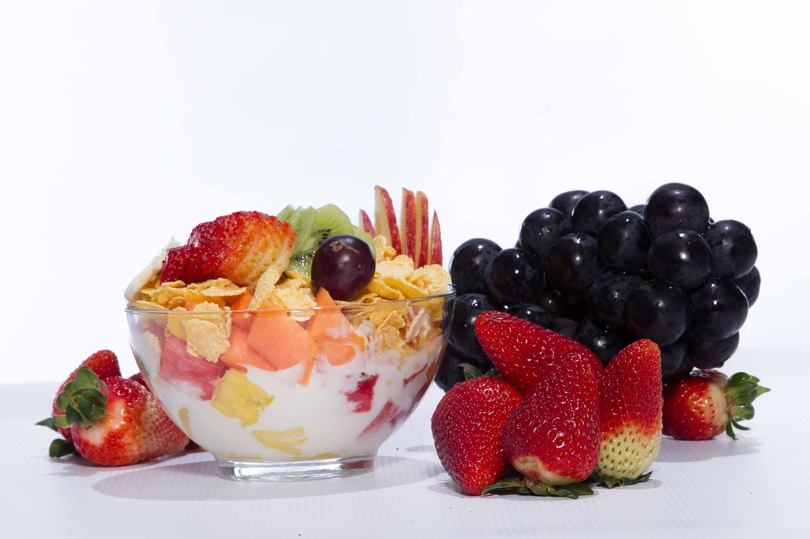

Home
Compota de bayas

This berry compote is made in a slow cooker with frozen berries and orange juice. It's a yummy dessert by itself or over ice cream.
Ingredientes
- 6 cups frozen mixed berries
- ½ cup white sugar
- ¼ cup orange juice
- 1 ½ teaspoons finely grated orange zest
- 2 tablespoons cornstarch
- 2 tablespoons water
Pasos
- Stir frozen berries, sugar, orange juice, and orange zest together in a slow cooker. Cover and cook on High until bubbling, about 1 1/2 hours.
- Stir cornstarch and water together in a cup until fully dissolved. Stir into berry mixture. Cover again and cook until thickened, 5 to 10 minutes. Serve warm or at room temperature.